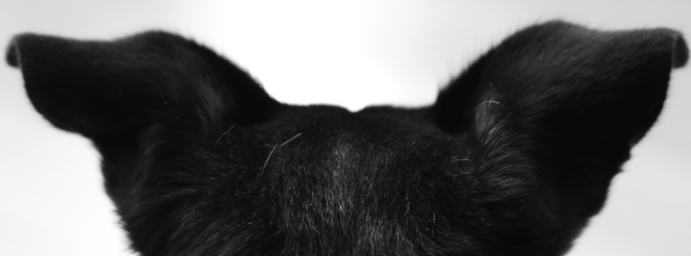

Katherine Stringfield Schultz
Education
- University of Chicago, BA with Honors, 2001
- Starter League, 2013
Employment
- Steans Family Foundation, 2001-2003
- University of Chicago, 2003-2005
- Garfield Park Conservatory Alliance, 2005-present
Portfolio
Interests
- Pet-lover, and Chicago Animal Care and Control volunteer
- Logan-Square resident
- HTML and CSS